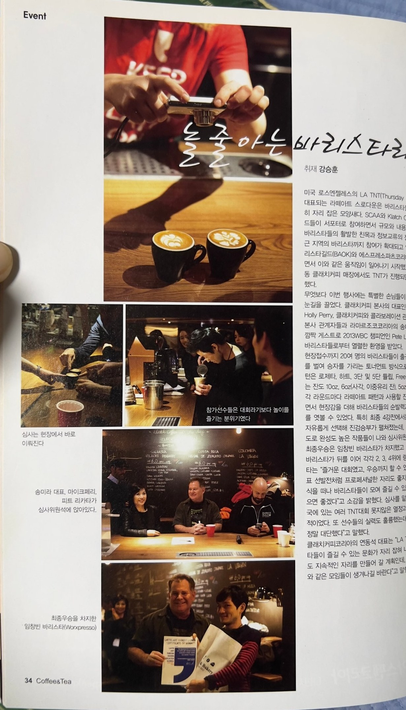
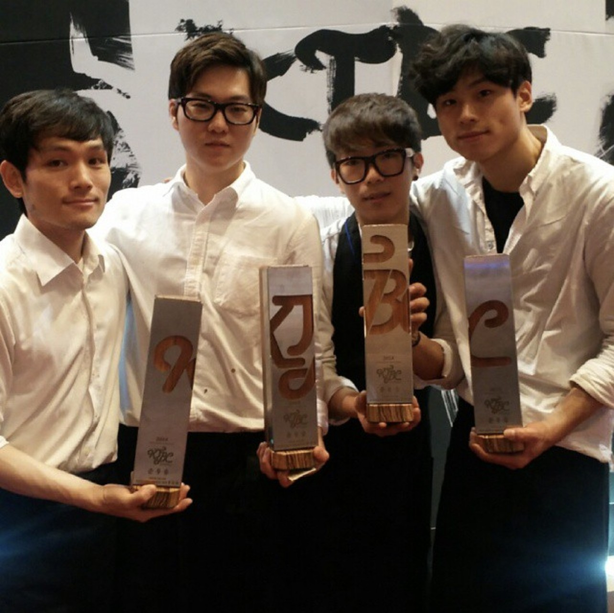
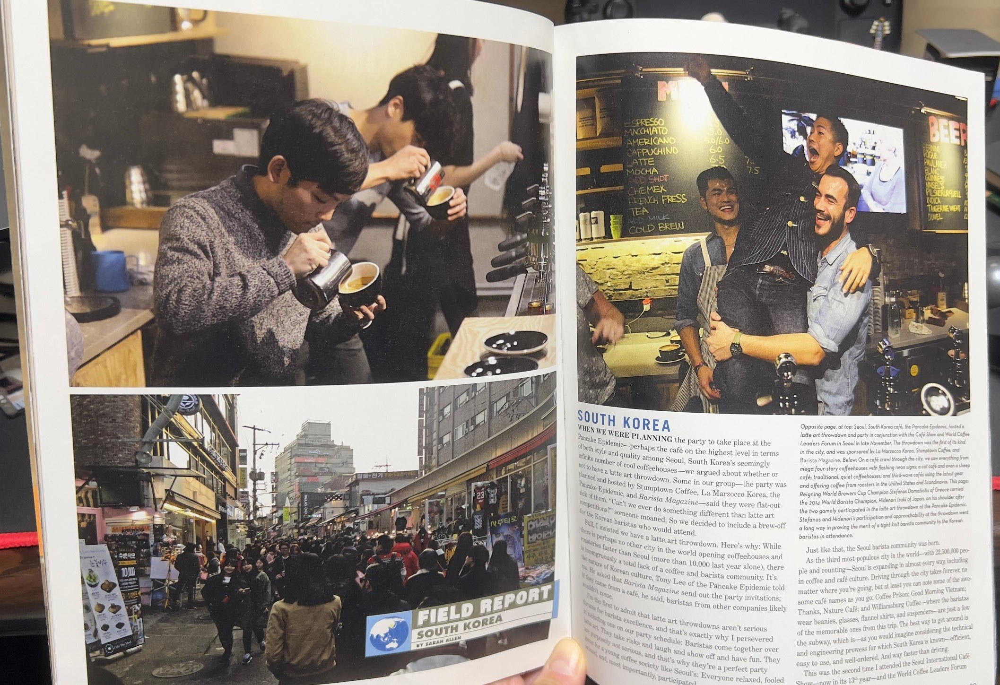
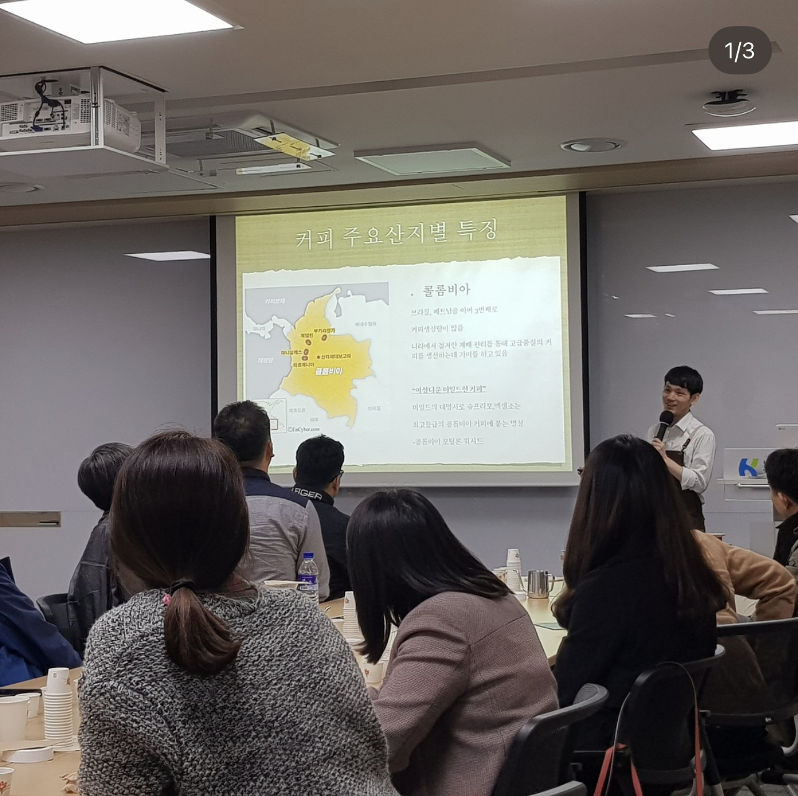
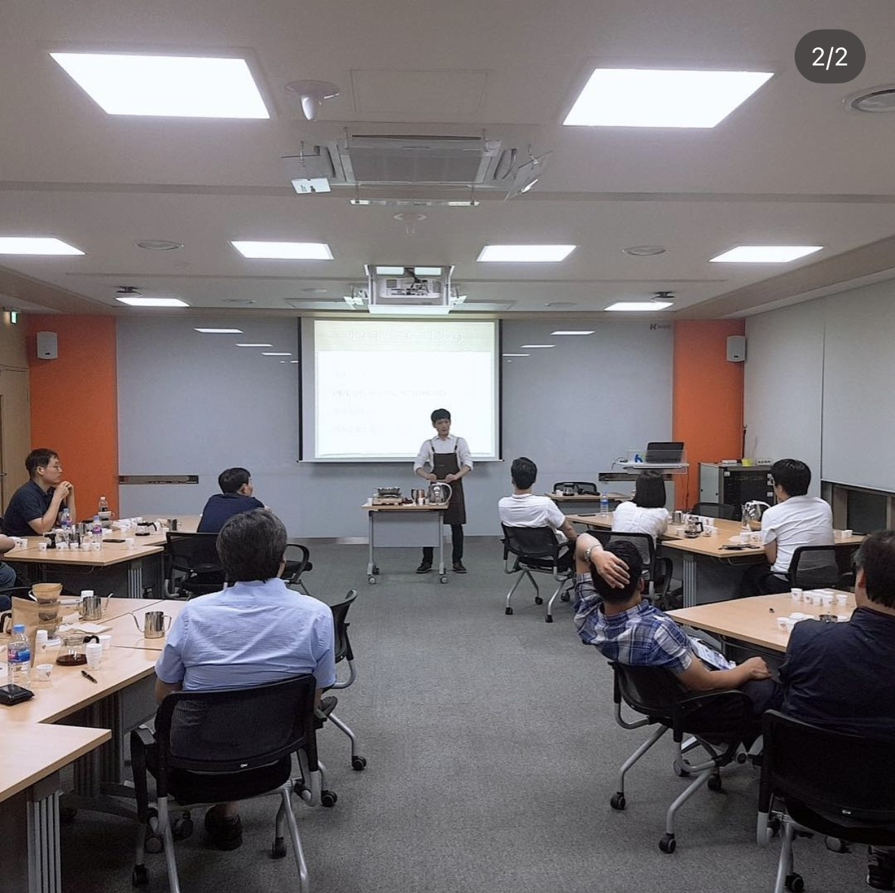
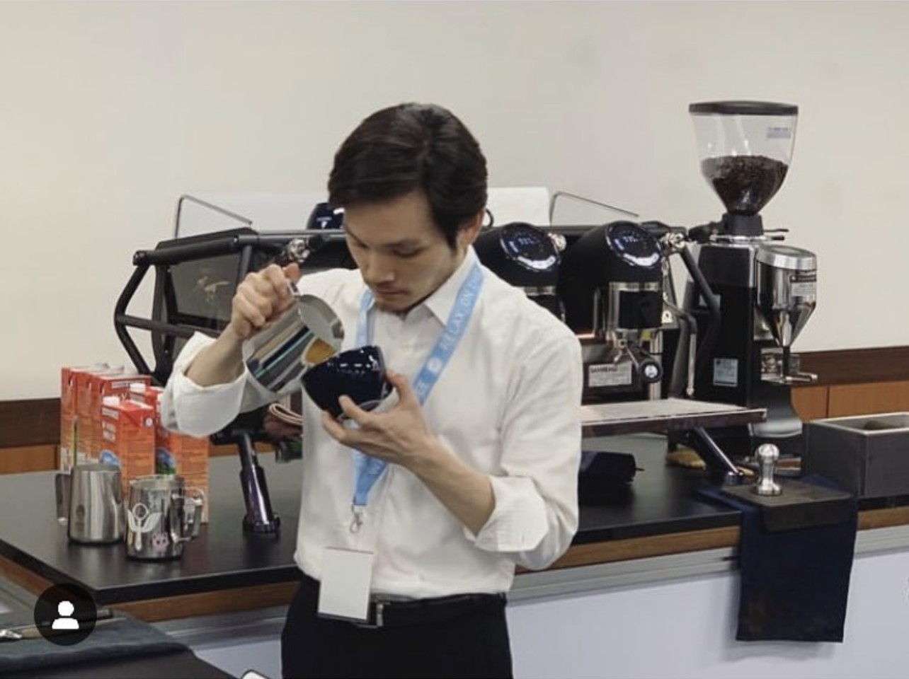
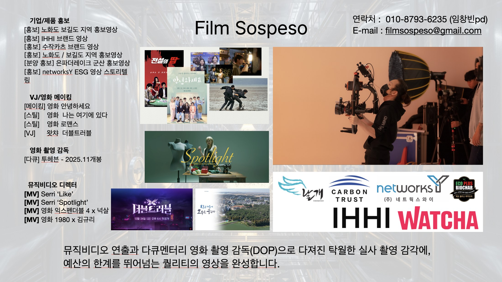

Résumé
임창빈 이력서
2005년 음반 녹음 스튜디오에서 일을 시작해, 2009년부터 커피·외식, 2016년부터 영상·영화 제작으로 영역을 넓혀 왔습니다.
인적 사항
| 이름 | 임창빈 |
|---|---|
| 생년월일 | 1985년 4월 8일 |
| 성별 | 남 |
| 주소 | 서울시 종로구 창신동 660-17번지 402호 |
| 연락처 | 010-8793-6235 |
| 이메일 | filmsospeso@gmail.com |
| 웹사이트 | filmsospeso.github.io/my-website |
학력
| 기간 | 학교 | 구분 | 비고 |
|---|---|---|---|
| 1992년 ~ 1998년 | 서울 재동초등학교 | 졸업 | |
| 1998년 ~ 2001년 | 서울 중앙중학교 | 졸업 | |
| 2001년 ~ 2004년 | 서울 중앙고등학교 | 졸업 | 밴드부 퍼스트 기타 |
| 2004년 입학 | 한국영상대학교 (구 공주영상대학) 촬영조명학부 음향제작과 | 1년 수료 후 자퇴 | 축제 대회 밴드 부문 금상 수상으로 특별전형 입학 |
병역
| 기간 | 소속 | 보직 | 구분 |
|---|---|---|---|
| 2007년 4월 9일 ~ 2009년 3월 28일 | 육군 제11사단 127기계화보병대대 | 장갑차 조종수 | 병장 전역 |
경력 요약
| 시기 | 소속 | 역할 | 분야 |
|---|---|---|---|
| 2005년 | 헤븐스튜디오 (양재) | 녹음 어시스턴트 | 음반 녹음 |
| 2005년 ~ 2007년 | 기타 레슨·홍대 공연 활동 | 기타리스트, 강사 | 음악 |
| 2007년 4월 ~ 2009년 3월 | 육군 제11사단 | 장갑차 조종수 | 병역 |
| 2009년 3월 ~ 2010년 3월 | 빈스빈스 | 입사 후 지원 슈퍼바이저까지 | 커피 |
| 2010년 3월 ~ 2011년 9월 | 코피티암 | 바리스타 | 커피 |
| 2011년 9월 ~ | 카페 컨설팅·교육 (독립 활동) | 컨설턴트, 강사 | 커피 |
| 2015년 ~ 2016년 10월 | DFD패션그룹 신규 외식사업부 | 점장 (스카우트) | 외식 |
| 2016년 11월 ~ 2017년 4월 | 스테디컬쳐 (기업 홍보영상 대행사) | 프로젝트 조감독 | 영상 |
| 2016년 ~ 현재 | 영화 제작·홍보·배급사 | 스틸, 메이킹, 행사 참여 | 영화 |
| 2018년 ~ 현재 | Filmsospeso (필름 소스페소) | 대표 (개인사업자), 기획·연출·촬영 | 영상·영화 |
경력 상세
음악·음반 녹음
헤븐스튜디오 (서울 양재, 음반 녹음 스튜디오) · 2005년 · 녹음 어시스턴트
- 임수정 3집 「놓칠 수 없는 사랑」 녹음 어시스턴트 참여 (2005)
- 소리엘 4집, 5집 녹음 어시스턴트 참여 (2005)
- 「테일즈런너」 OST 녹음 어시스턴트 참여 (2005)
기타 레슨·공연 활동 · 2005년 ~ 2007년
- 합주실을 마련해 기타 레슨 진행
- 홍대에서 공연 활동
커피·외식
빈스빈스 · 2009년 3월 ~ 2010년 3월
- 매장 근무로 시작해 지원 슈퍼바이저까지 맡음
- 당시 이사님의 말 "네가 목표하는 그 이상을 보아라"를 일의 기준으로 삼음
코피티암 · 2010년 3월 ~ 2011년 9월
- 바리스타로 근무하며 바리스타 대회 준비
카페 컨설팅·교육 (독립 활동) · 2011년 9월 ~
- 코피티암 퇴사 직후 개인 카페를 대상으로 컨설팅 시작
- 커피 교육과 출장 교육 진행
- Creative 13 커피 파트 강사로 출강
- 국가과학기술인력개발원(KIRD): 2017년 말부터 정기 진행, 전국 연구원 약 400명 수강
- 국가인재교육개발원: 2018년 4월
- SCA Korea 대회 진행 테스터 (2019년 3월, 학여울 SETEC)
DFD패션그룹 신규 외식사업부 · 2015년 ~ 2016년 10월 · 점장
- 외식사업부 신설에 맞춰 점장으로 스카우트
- 테스트 매장 「Blooming Club MAY」 운영
- 정식 브랜드 「9Block」 출범
- 재고·POS 시스템 구축에 6개월간 참여
- 건강상의 문제로 2016년 10월 퇴사
영상·영화
스테디컬쳐 (기업 홍보영상 대행사) · 2016년 11월 ~ 2017년 4월 · 프로젝트 조감독
- 프로젝트 조감독으로 기업 홍보영상 제작 참여
- 카페 컨설팅 겸업
영화 제작·홍보·배급사 · 2016년 ~ 현재
- 영화 스틸 촬영, 메이킹 촬영
- 영화 관련 행사 참여
- 홍보사: 날개엔터테인먼트 외 다수
- 제작사: 조이엔시네마 외 다수
- 배급사: 드림팩트엔터테인먼트 외 다수
Filmsospeso (필름 소스페소) · 2018년 ~ 현재 · 대표 (개인사업자)
- 뮤직비디오, 브랜드 필름, 기업 홍보영상, 영화·다큐멘터리를 기획부터 연출, 촬영, 편집까지 제작
- 다큐멘터리 영화 「투헤븐」 촬영 감독 (2025년 11월 개봉)
- 영상 제작용 웹앱 「Readi Studio」 개발 (2026년 10월 ~ 개발 중)
- 영상 제작 아이디어부터 스토리보드, 제안서까지 한곳에서 진행
- 150~300명 이상이 함께 보는 스토리보드, 일일촬영표 등 영상 업계에 필요한 기능 수록
주요 작업
| 분야 | 작품 | 역할 |
|---|---|---|
| 뮤직비디오 | 달샤벳 Serri 「Spotlight」 | 기획·연출·촬영·편집 |
| 뮤직비디오 | 달샤벳 Serri 「LIKE」 | 기획·연출·촬영·편집 |
| 뮤직비디오 | 영화 「익스펜더블4」 x 넉살 | 기획·연출·촬영·조명 |
| 뮤직비디오 | 영화 「1980」 x 임을 위한 행진곡 | 촬영 |
| 뮤직비디오 | 「I Wish I knew」 퍼포먼스 | 연출·촬영·조명·편집 |
| 영화 | 「투헤븐 To Heaven」 | 촬영 감독 |
| 영화 | 「호프 HOPE」 | XM2 특수촬영팀 참여 |
| 영화 | 「본회퍼: 목사. 스파이. 암살자」 | 자막 후반작업 |
| 영화 | 「사운드 오브 호프: 포썸 트롯의 기적」 | 자막 후반작업 |
| 영화 | 「안녕하세요」 | 메이킹 |
| 영화 | 「나는 여기에 있다」, 「로맨스」 | 스틸 |
| 브랜드·광고 | IHHI 브랜드 필름 | 기획·연출·촬영·편집 |
| 브랜드·광고 | yhel 제품 브랜드 필름 | 기획·연출·촬영·편집 |
| 브랜드·광고 | 수작카츠 홍보영상 | 기획·연출·촬영·편집 |
| 브랜드·광고 | JART 은파 더 레이크 분양 홍보영상 | 대본·연출·촬영·편집 |
| 기업 홍보 | 에코플러스바이오차 기업홍보 시리즈 (5편) | 대본·기획·연출·촬영·편집 |
| 기업 홍보 | networksY ESG 영상 | 홍보영상 제작 |
| 지역 홍보 | 노화도·보길도 지역 홍보영상 | 홍보영상 제작 |
| VJ | 왓챠 오리지널 「더블트러블」 (3편) | 촬영·편집 |
| 행사 | 풀파티 행사 스케치 | 촬영·편집 |
| 행사 | 첸웬링 전시 (제이미컬렉션 갤러리) | 촬영 |
수상 및 매체 게재
| 연도 | 내용 | 결과 |
|---|---|---|
| 2004년 입학 전 | 축제 대회 밴드 부문 | 금상 |
| 2013년 | Klatch배 Latte Art Throwdown (라마르조코 코리아 주최) | 우승 |
| 2013년 | 「Coffee&Tea」 2013년 12월호(143호) 34쪽 행사 기사, 최종 우승자로 소개 | 게재 |
| 2014년 | Korea Team Barista Championship (KTBC), 팀 스트라다 팀장으로 출전 | 준우승 |
| 2015년 초 | 해외 「Barista Magazine」 Field Report: South Korea, 한국 바리스타 부문 (2014년 11월 서울 행사 취재) | 게재 |
참고 자료
매체 게재



강의·행사



Filmsospeso 포트폴리오
